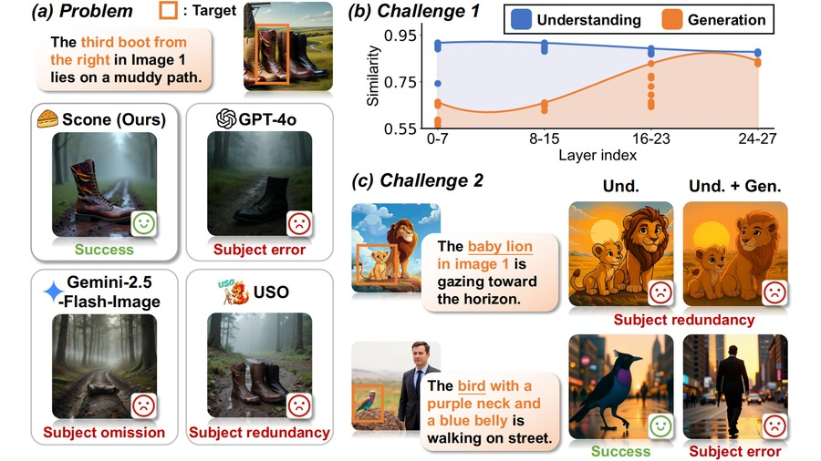
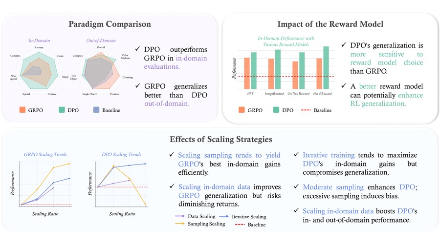

Biography
I am a first-year master's student at Peking University, co-supervised by Wentao Zhang and Weinan E at AAIS. I also work closely with Renrui Zhang.
Since June 2025, I have been a research intern at Kuaishou Kling AI. My published work is mainly on text-to-image generation. My focus now is robot learning, under one bet: frontier LLMs will become the brain of robots. They will act by writing and calling code. What robot builders must own is everything the model cannot ship: hardware, simulation, and deployment.
Opening the Physical World to AGI
The physical world was built for human hands and eyes. I want to rebuild its interfaces for agents. First, make robots and factories legible and callable: hardware as a command line, an "MCP for the physical world." Then close the loop: embodied agents that run experiments, repair their own hardware and production lines, and help build the next generation of themselves.
Education
-
 Peking University (2026.09-2028.09) M.S. in Mathematics
Peking University (2026.09-2028.09) M.S. in Mathematics
- Xidian University (2022.09-2026.06) B.Eng. in Artificial Intelligence
CURRENT BETS · UPDATED NOV 2026
What I’m Thinking About
Three bets about how AGI enters the physical world. They are dated because I expect to revise them.
Frontier LLMs Will Be the Robot's Brain
Embodied AI is at its GPT-3 moment. I expect high-level reasoning and skill-level control (System 2 and System 1) to merge into one frontier model, instead of staying a separate robot-specific stack. Like computer use, the model layer of robotics then becomes winner-take-most.
What would change my mind: contact-rich manipulation, touch, and millisecond-level control. If specialized robot models keep a durable lead there while frontier models scale, "one model" goes less far than I think.
Code Is the Universal Representation
Code is compact, composable, and checkable, and it is what frontier models are best at.
For action: robotics is in a cold-start era with little action data. A policy that is written and verified in simulation starts from what the model already knows, not from zero. Simulation is to robot code what tests are to software: it makes the reward scalable and verifiable.
For generation: images, video, 3D, and interactive worlds can all be described as programs. If the reasoning moves into code, the generative model shrinks to a renderer. The open question is how light that renderer can be.
Hardware Is Part of the Algorithm
If the brain is shared, robot builders should build what is orthogonal to it: things that become more valuable with every model upgrade.
- A body the model wants to call. Design hardware backward from the task and the supervision you can get. Expose it as a clean command line: arms, touch, even the factory. A factory is also a robot.
- The best simulation of your own body and scene. Real-to-sim for the place you actually deploy.
- A deployment flywheel. Failures in the field flow back into simulation and data. Deployment scale is verification capacity.
Model, harness, and hardware are one system. Optimize them together.
Why the physical world at all. Coding advanced fast because its rewards are verifiable and its output feeds the next generation of models. I want the same loop in physical production. Compute must be physically built: fabs, power plants, data centers. Science moves at the speed of experiments, and today that speed is capped by human hands. Text and code give models their priors; the physical world gives them an open-ended curriculum and the final test. The goal is an AutoResearch loop for the physical world. Build robots that help build better robots.
Open Questions
- How should reinforcement learning update System 0 and System 1/2 together, when today they are trained apart?
- Model-based RL made locomotion efficient. Can it do the same for manipulation?
- What actually blocks simulation at scale, and what keeps the sim-to-real gap open?
- Does robot post-training need a very large model to generalize, given that deployment cannot afford one?
- Are skills in the physical world multimodal?
News
[09.2026] Started my M.S. at Peking University.
[06.2026] Scone was accepted by CVPR 2026 as a Highlight paper.
[05.2026] CoF-T2I was accepted by ICML 2026.
[09.2025] Delving into RL for Image Generation with CoT was accepted by NeurIPS 2025.
[06.2025] Let's Verify and Reinforce Image Generation Step by Step appeared at CVPR 2025.
[01.2025] MAVIS was accepted by ICLR 2025.
Publications
Selected publications/preprints

CoF-T2I: Video Models as Pure Visual Reasoners for Text-to-Image Generation

Scone: Bridging Composition and Distinction in Subject-Driven Image Generation via Unified Understanding-Generation Modeling
- Yuran Wang*, Bohan Zeng*, Chengzhuo Tong, Wenxuan Liu, Yang Shi, Xiaochen Ma, Hao Liang, Yuanxing Zhang, Wentao Zhang
- IEEE/CVF Conference on Computer Vision and Pattern Recognition, 2026. Highlight.
- [Paper]

Delving into RL for Image Generation with CoT: A Study on DPO vs. GRPO
- Chengzhuo Tong, Ziyu Guo, Renrui Zhang, Wenyu Shan, Xinyu Wei, Zhenghao Xing, Hongsheng Li, Pheng-Ann Heng
- Conference on Neural Information Processing Systems, 2025.
- [Paper]

Let's Verify and Reinforce Image Generation Step by Step
- Renrui Zhang*, Chengzhuo Tong*, Zhizheng Zhao*, Ziyu Guo*, Haoquan Zhang, Manyuan Zhang, Jiaming Liu, Peng Gao, Hongsheng Li
- IEEE/CVF Conference on Computer Vision and Pattern Recognition, 2025.
- [Paper]

MAVIS: Mathematical Visual Instruction Tuning with an Automatic Data Engine
- Renrui Zhang, Xinyu Wei, Dongzhi Jiang, Ziyu Guo, Yichi Zhang, Chengzhuo Tong, Jiaming Liu, Aojun Zhou, Shanghang Zhang, Peng Gao, Hongsheng Li
- International Conference on Learning Representations, 2025.
- [Paper]
Let’s Connect
I'm looking for people who have debugged real robots, people working on quadruped navigation in Beijing, and anyone who disagrees with the bets above and has evidence. Reach me on X (@selfcarveddecay), by email, or on WeChat.